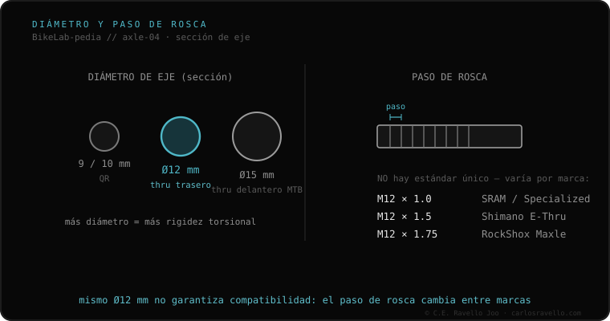

O passo de rosca é a distância entre os fios da rosca do eixo passante, e não há um padrão único: o mesmo diâmetro de 12 mm pode usar M12×1.0 (SRAM/Specialized), M12×1.5 (Shimano E-Thru) ou M12×1.75 (RockShox Maxle), conforme a marca do quadro ou do garfo. É o dado mais esquecido e o mais perigoso: se você força um eixo com passo incorreto, destrói a rosca do quadro de forma irreversível. Por isso a largura e o diâmetro não bastam: você precisa também do passo correto.
É a armadilha silenciosa do eixo passante: dois eixos idênticos por fora podem ter roscas incompatíveis que arruínam o seu quadro.
O passo (1.0, 1.5 ou 1.75 mm) define a cada quantos milímetros a rosca avança. Um eixo de M12×1.0 não entra num quadro de M12×1.75 mesmo que ambos sejam «de 12 mm»: a rosca não coincide. Forçá-lo espana os fios do inserto do quadro, um dano caro e às vezes irreparável. Por isso, ao trocar um eixo passante, é preciso respeitar marca/passo ou medi-lo.

O eixo deve coincidir em diâmetro (M12) e passo (1.0, 1.5 ou 1.75) com o inserto do quadro ou do garfo. Os quadros com UDH usam M12×1.0 com 12.7 mm de rosca. Se não tem certeza, não force: identifique o passo antes de rosquear.
Se você não sabe qual eixo, largura ou rosca usa o seu quadro, mande o caso. Diagnóstico real, sem te vender nada. Fale conosco no WhatsApp
Com um pente de roscas, ou medindo 10 fios seguidos: se medem 10 mm, o passo é 1.0; 15 mm, 1.5; 17.5 mm, 1.75. Na dúvida, leve o eixo à loja.
Cada marca (SRAM, Shimano, RockShox) adotou seu próprio passo. Por isso eixos de igual diâmetro e largura podem ser incompatíveis.
M12×1.0, com um comprimento de rosca de 12.7 mm, segundo a especificação da SRAM.